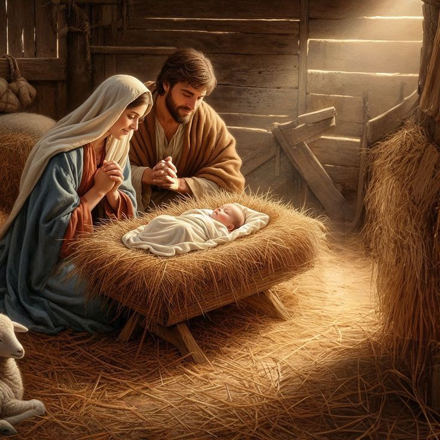
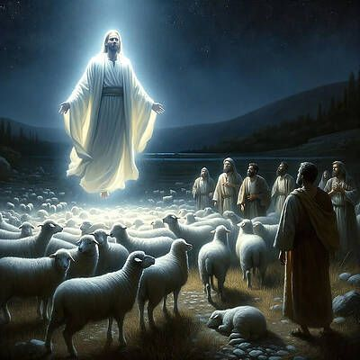
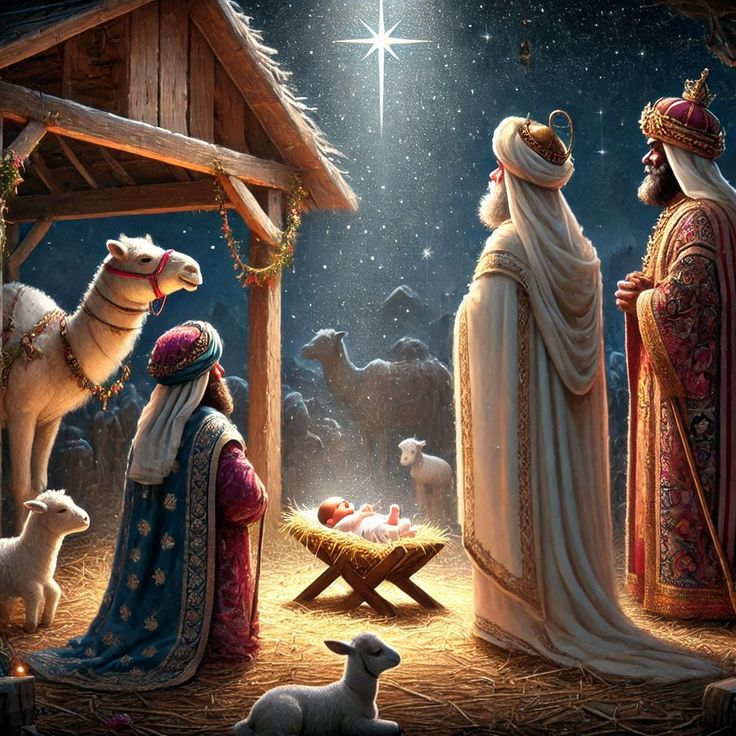

The Savior is Born
"The birth of Jesus brought peace, joy, and salvation to all people. He came as the Light of the World, shining hope into the darkness. Just as the shepherds and wise men sought Him, we too are called to seek and worship Him with all our hearts.”
Light of the World – Birth of Jesus

The Birth of Jesus
இயேசுவின் பிறப்பு
That very night, Mary gave birth to her son — Jesus Christ She wrapped Him in cloth and laid Him in a manger, because there was no room for them in the inn. The night was calm and silent. The sky shimmered with bright stars. In the midst of that stillness, the Savior of the world was born. A tiny baby, lying in a simple manger — yet His coming would change the course of human history forever. Beside the stable, a few gentle animals stood quietly. They, too, became witnesses to that glorious moment. Mary and Joseph gazed upon their newborn child with joy — their eyes filled with tears of gratitude and wonder.
அந்த இரவிலேயே, மரியாள் தனது மகனைப் பெற்றாள் — இயேசு கிறிஸ்து அவள் அவரை துணியில் சுற்றி, மாடுப் பொட்டியில் படுக்க வைத்தாள். ஏனெனில் அவர்களுக்கு தங்குமிடம் எங்கும் இல்லை. அந்த இரவு மிகவும் அமைதியானது. வானம் பிரகாசமான நட்சத்திரங்களால் மின்னியது. அந்த அமைதியின் நடுவே, உலகத்தின் இரட்சகர் பிறந்தார். சிறிய குழந்தையாக, ஒரு எளிய மாடுப் பொட்டியில் — ஆனால் அவர் வருகை மனித வரலாற்றை முழுவதும் மாற்றப் போகிறது. அந்த மாடுத் தாழ்வாரத்தின் அருகே சில விலங்குகள் அமைதியாக நின்றன. அவற்றும் அந்த மகத்தான நொடிக்கு சாட்சியாக இருந்தன. மரியாளும் யோசேப்பும் குழந்தையை பார்த்து மகிழ்ந்தனர் — அவர்களின் கண்களில் நன்றி மற்றும் வியப்பின் கண்ணீர் மிளிர்ந்தது.

The Good News to the Shepherds
மேய்ப்பர்களுக்கு நற்செய்தி
Nearby, some shepherds were keeping watch over their flocks in the fields. Suddenly, the night sky shone with a brilliant light, and an angel of the Lord appeared before them! The shepherds were terrified, but the angel said: “Do not be afraid! I bring you good news of great joy that will be for all people. Today in the town of David, a Savior has been born to you — He is Christ the Lord.” — Luke 2:10–11 Then the heavens were filled with a multitude of angels praising God and saying: “Glory to God in the highest, and on earth peace to those on whom His favor rests.” — Luke 2:14 Filled with excitement, the shepherds hurried to Bethlehem. They found Mary, Joseph, and the baby Jesus lying in a manger. They bowed down and worshiped Him, giving glory to God.
அந்த நேரத்தில், சில மேய்ப்பர்கள் வெளியில் தங்கள் ஆடுகளை காக்கின்றனர். திடீரென, வானத்தில் ஒரு ஒளி பிரகாசித்தது, ஒரு தேவதூதன் அவர்களுக்கு முன்பாக நின்று சொன்னான்: “பயப்படாதீர்கள்! மகிழ்ச்சி தரும் நற்செய்தியை உங்களுக்குக் கொண்டு வந்துள்ளேன். இன்று பெத்லகேமில் ஒரு இரட்சகர் பிறந்துள்ளார் — அவர் கிறிஸ்து கர்த்தர்!” அந்தச் செய்தியுடன், வானத்தில் பல தேவதூதர்கள் தோன்றி மகிழ்ச்சியுடன் பாடினர்: “உயர்ந்த இடங்களில் தேவனுக்குத் மகிமை! பூமியில் சமாதானம்! மனிதரிடத்தில் நன்மை!” மேய்ப்பர்கள் மகிழ்ச்சியுடன் பெத்லகேமுக்கு ஓடினர். அவர்கள் மரியாளையும் யோசேப்பையும், மாடுப் பொட்டியில் படுத்திருந்த குழந்தை இயேசுவையும் கண்டனர். அவர்கள் மண்டியிட்டு வணங்கி, தேவனுக்கு மகிமை கூறினர்.

The Visit of the Wise Men
கிழக்கிலிருந்து வந்த ஞானிகள்
Months later, wise men from the East saw a special star shining in the sky. They said, “We have seen His star in the East and have come to worship the King of the Jews.” Following the star, they came to Bethlehem. There they found the child Jesus with His mother Mary. They bowed before Him and presented their precious gifts: Gold – for Jesus, the King of kings Frankincense – for His divinity and holiness Myrrh – for His sacrifice and future suffering Then, filled with joy and peace, the wise men returned to their land, praising God for what they had seen.
பல மாதங்கள் கழித்து, கிழக்கிலிருந்து சில ஞானிகள் வானத்தில் ஒரு விசேஷமான நட்சத்திரத்தைப் பார்த்தனர். அவர்கள் கூறினர்: “இது யூதர்களின் புதிய ராஜாவின் நட்சத்திரம்! அவரை வணங்க நாமும் செல்ல வேண்டும்!” அவர்கள் நட்சத்திரத்தைப் பின்தொடர்ந்து பெத்லகேமுக்கு வந்தனர். அங்குள்ள வீட்டில் மரியாளையும் குழந்தை இயேசுவையும் கண்டனர். அவர்கள் மண்டியிட்டு வணங்கி தங்கள் பரிசுகளை அளித்தனர்: தங்கம் – ராஜாதியாகிய இயேசுவுக்காக நறுமணப் பொடி (Frankincense) – அவருடைய தெய்வீகத்தைக் குறிக்க மிர் (Myrrh) – அவர் தியாகத்தையும் துன்பத்தையும் நினைவுபடுத்த அவர்கள் தேவனுக்குப் புகழ் கூறி மகிழ்ச்சியுடன் தங்கள் ஊர்களுக்குத் திரும்பினர்.
“He is the Everlasting Father — full of love, mercy, and compassion. His arms are always open to those who come to Him. He is the Prince of Peace — the One who calms the storms within, who brings rest to weary souls and unity to a broken world. That night in Bethlehem was not just the birth of a child — it was the beginning of a new hope for all mankind. Through Jesus, the promise of salvation was born, and the light of God began to shine in every heart that believes.”